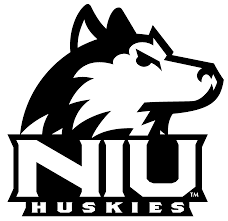

I came to Northern Illinois University in the fall of 2015 and my expected graduation is Decemeber of 2019. I am majoring in Operations Management and Information Systems. I also have a minor in Business Analytics and a certificate in SAP. I have had many great experiences throughout my time here at NIU and am glad that I chose this institution. I'm currently searching for an internship during the summer in the Information Systems or Information Technology field. At NIU, I am apart of the Tau Kappa Epsilon fraternity (TKE) and a member of Association of Information Technology Professionals (AITP).

Major: Operations Managment & Information Systems
Minor: Business Analytics